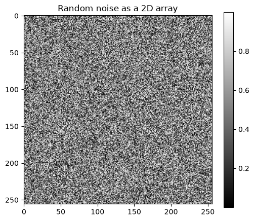
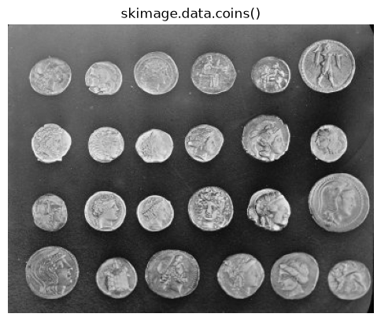
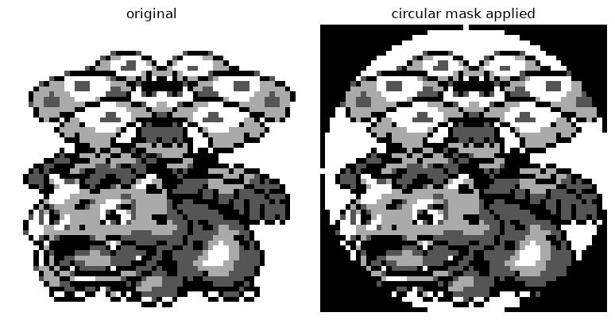
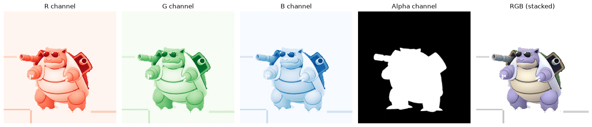
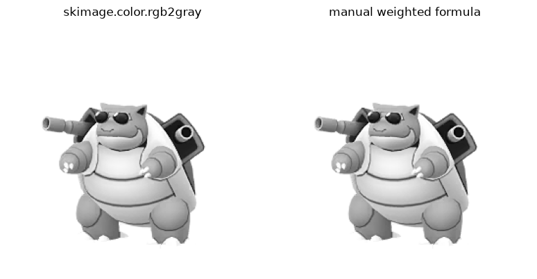
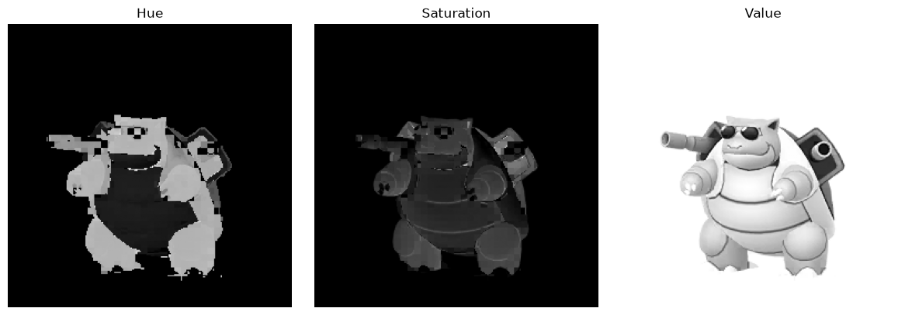
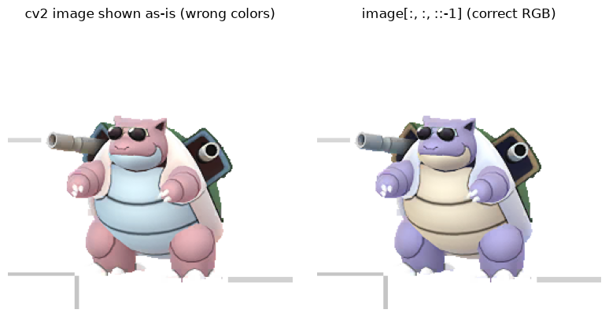
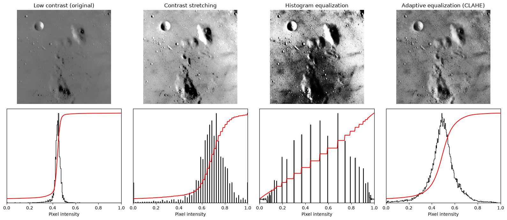
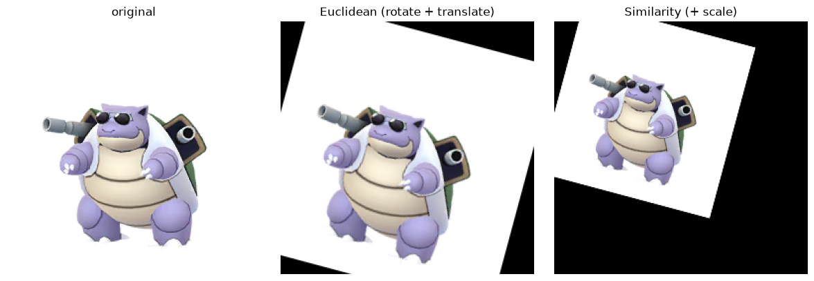
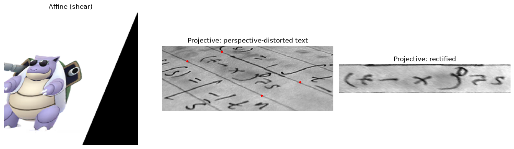

影像處理基礎：從 NumPy 陣列到幾何變換#
本章重點
影像在電腦裡就是一個
NumPy陣列：形狀（shape）、資料型別（dtype）與數值範圍決定了它能怎麼被處理。NumPy索引慣例是(row, column)，原點在左上角，這與數學課本常用的笛卡兒座標(x, y)不同。讀寫影像、在 RGB / RGBA / 灰階 / HSV 之間轉換，以及理解 OpenCV 的 BGR 通道順序。
用對比拉伸與直方圖等化，把「看起來很平」的影像變得可判讀。
幾何變換有一個由簡到繁的階層：Euclidean → Similarity → Affine → Projective，各自保留不同的幾何性質。
影像就是 NumPy 陣列#
scikit-image（本書慣用寫法 ski）把影像單純表示成 NumPy 陣列，因此可以無縫接上 NumPy、SciPy、matplotlib 整個科學計算生態系。灰階影像是二維陣列 (row, col)；彩色影像則多一個通道維度 (row, col, channel)。這個表示法會貫穿本書所有章節——之後會看到，一張 cryo-EM micrograph，說穿了也只是一個尺寸很大、雜訊很多的 2D 浮點數陣列。下面先用一張隨機雜訊陣列與 skimage.data 內建的範例影像熱身。
import numpy as np
import matplotlib.pyplot as plt
import skimage as ski
import cv2
plt.rcParams['image.cmap'] = 'gray'
plt.rcParams['figure.figsize'] = (6, 5)
def imshow_all(*images, titles=None, size=4, **kwargs):
"""並排顯示多張影像，方便比較。"""
images = [ski.util.img_as_float(im) for im in images]
if titles is None:
titles = [''] * len(images)
fig, axes = plt.subplots(nrows=1, ncols=len(images), figsize=(size * len(images), size))
if len(images) == 1:
axes = [axes]
for ax, im, title in zip(axes, images, titles):
ax.imshow(im, **kwargs)
ax.set_title(title)
ax.axis('off')
plt.tight_layout()
return fig, axes
def plot_img_and_hist(image, axes, bins=256):
"""左邊畫影像，右邊畫直方圖與累積分布函數（CDF）。"""
image = ski.util.img_as_float(image)
ax_img, ax_hist = axes
ax_cdf = ax_hist.twinx()
ax_img.imshow(image, cmap='gray')
ax_img.axis('off')
ax_hist.hist(image.ravel(), bins=bins, histtype='step', color='black')
ax_hist.set_xlim(0, 1)
ax_hist.set_yticks([])
ax_hist.set_xlabel('Pixel intensity')
img_cdf, bin_centers = ski.exposure.cumulative_distribution(image, bins)
ax_cdf.plot(bin_centers, img_cdf, 'r')
ax_cdf.set_yticks([])
return ax_img, ax_hist, ax_cdf
random_image = np.random.default_rng(0).random((256, 256))
print('type:', type(random_image))
print('dtype:', random_image.dtype)
print('shape:', random_image.shape)
fig, ax = plt.subplots()
im = ax.imshow(random_image)
ax.set_title('Random noise as a 2D array')
plt.colorbar(im, ax=ax)
plt.show()
type: <class 'numpy.ndarray'>
dtype: float64
shape: (256, 256)

coins = ski.data.coins()
print('type:', type(coins))
print('dtype:', coins.dtype)
print('shape:', coins.shape)
plt.imshow(coins)
plt.title('skimage.data.coins()')
plt.axis('off')
plt.show()
type: <class 'numpy.ndarray'>
dtype: uint8
shape: (303, 384)

座標與索引慣例#
因為影像就是陣列，NumPy 的索引與切片（indexing / slicing）在這裡完全適用，也可以拿來讀取或修改像素值。
📌 請特別注意：陣列的第一個維度是列（row），第二個維度是欄（column），原點 (0, 0) 在左上角。這與矩陣（線性代數）的慣例一致，卻和 matplotlib 座標軸、笛卡兒座標常用的 (x, y)（原點在左下角）不同——這是初學者最容易搞混、也最容易寫出座標對調 bug 的地方。
venusaur = ski.io.imread('images/venusaur.png')
print('shape:', venusaur.shape, ' dtype:', venusaur.dtype)
print('min/max/mean:', venusaur.min(), venusaur.max(), venusaur.mean())
venusaur_demo = venusaur.copy()
print('pixel at (row=11, col=21):', venusaur_demo[11, 21])
# 用布林遮罩（boolean mask）選取一個圓形區域並塗黑
nrows, ncols = venusaur_demo.shape
row, col = np.mgrid[0:nrows, 0:ncols]
cnt_row, cnt_col = nrows / 2, ncols / 2
outer_disk_mask = (row - cnt_row) ** 2 + (col - cnt_col) ** 2 > (nrows / 2) ** 2
venusaur_demo[outer_disk_mask] = 0
imshow_all(venusaur, venusaur_demo, titles=['original', 'circular mask applied']);
shape: (56, 56) dtype: uint8
min/max/mean: 0 255 155.9327168367347
pixel at (row=11, col=21): 170

資料型別（dtype）與數值範圍#
skimage 假設不同 dtype 各自對應固定的數值範圍：uint8 是 [0, 255]、uint16 是 [0, 65535]、浮點數是 [-1, 1] 或 [0, 1]。直接對影像用 .astype() 轉型別非常危險，因為它只改變表示法、不會重新縮放數值；正確做法是使用 img_as_float()、img_as_ubyte() 等轉換函式，它們會同時處理縮放。
image = np.arange(0, 50, 10, dtype=np.uint8)
print('原始 uint8: ', image)
print('.astype(float): ', image.astype(float)) # 數值沒有被重新縮放，仍是 0-40
print('img_as_float(): ', ski.util.img_as_float(image)) # 正確縮放到 [0, 1]
float_image = np.array([0, 0.5, 1], dtype=float)
print('\nimg_as_ubyte([0, 0.5, 1]) ->', ski.util.img_as_ubyte(float_image))
原始 uint8: [ 0 10 20 30 40]
.astype(float): [ 0. 10. 20. 30. 40.]
img_as_float(): [0. 0.03921569 0.07843137 0.11764706 0.15686275]
img_as_ubyte([0, 0.5, 1]) -> [ 0 128 255]
影像輸入／輸出（Image I/O）#
skimage.io.imread() 會把常見的影像檔案格式（PNG、JPEG、TIFF……）讀成 NumPy 陣列；imsave() 則反向把陣列寫回檔案。scikit-image 內部會自動挑選可用的後端函式庫（imageio、pillow 等），使用者通常不需要關心細節。
blastoise = ski.io.imread('images/blastoise.png')
print('blastoise:', blastoise.shape, blastoise.dtype)
plt.imshow(blastoise)
plt.title('Loaded with ski.io.imread')
plt.axis('off')
plt.show()
blastoise: (256, 256, 4) uint8
色彩模型：RGB / RGBA / 灰階 / HSV#
彩色影像通常是三維陣列，最後一個維度代表色彩通道：RGB 影像有 3 個通道（紅、綠、藍），若額外帶有透明度資訊則是 RGBA（多一個 alpha 通道，0 表示全透明、255 表示不透明）。
r, g, b, a = [blastoise[:, :, i] for i in range(4)]
fig, axes = plt.subplots(1, 5, figsize=(16, 4))
for ax in axes:
ax.axis('off')
axes[0].imshow(r, cmap='Reds_r'); axes[0].set_title('R channel')
axes[1].imshow(g, cmap='Greens_r'); axes[1].set_title('G channel')
axes[2].imshow(b, cmap='Blues_r'); axes[2].set_title('B channel')
axes[3].imshow(a, cmap='gray'); axes[3].set_title('Alpha channel')
axes[4].imshow(np.stack([r, g, b], axis=2)); axes[4].set_title('RGB (stacked)')
plt.tight_layout()
plt.show()

把彩色影像轉成灰階時，skimage.color.rgb2gray() 並不是單純取三通道平均，而是依人眼對不同色光的敏感度加權（相對亮度公式）：
除了 RGB，HSV（色相 hue、飽和度 saturation、明度 value）也是常用的色彩空間，三個分量彼此較為獨立，在需要依「顏色」而非「亮度」做篩選時特別方便。
rgb = ski.color.rgba2rgb(blastoise) # alpha 混合，預設背景為白色
gray_skimage = ski.color.rgb2gray(rgb)
gray_manual = rgb @ [0.2126, 0.7152, 0.0722]
imshow_all(gray_skimage, gray_manual, titles=['skimage.color.rgb2gray', 'manual weighted formula']);

hsv = ski.color.rgb2hsv(rgb)
imshow_all(hsv[..., 0], hsv[..., 1], hsv[..., 2], titles=['Hue', 'Saturation', 'Value']);

OpenCV 中的色彩順序：BGR vs. RGB#
OpenCV（cv2）也是以 NumPy 陣列操作影像，因此可以跟 scikit-image 混用；但 cv2.imread() 預設把彩色影像讀成 BGR（藍、綠、紅）順序，而不是 RGB。忘記這件事是最常見的踩雷點之一：直接用 matplotlib 顯示 cv2 讀進來的影像，顏色會是錯的（藍紅對調）。
bgr = cv2.imread('images/blastoise.png') # 注意：預設丟棄 alpha 通道，回傳 3 通道 BGR
rgb_fixed = bgr[:, :, ::-1] # 反轉最後一個軸即可轉回 RGB，row/col 不受影響
fig, axes = plt.subplots(1, 2, figsize=(8, 4))
axes[0].imshow(bgr); axes[0].set_title('cv2 image shown as-is (wrong colors)'); axes[0].axis('off')
axes[1].imshow(rgb_fixed); axes[1].set_title('image[:, :, ::-1] (correct RGB)'); axes[1].axis('off')
plt.tight_layout()
plt.show()

對比與直方圖等化#
影像的可用數值範圍由 dtype 決定，但實際像素值常常只集中在其中一小段——這就是「對比度低」。skimage.exposure 提供了幾種常見的增強手法：
對比拉伸（contrast stretching）：用
rescale_intensity()，把某個百分位數區間線性拉伸到整個範圍。直方圖等化（histogram equalization）：
equalize_hist()，讓累積分布函數趨近線性，使各強度區間被「平均」表示。適應性等化（adaptive equalization, CLAHE）：
equalize_adapthist()，在影像的局部子區塊分別等化，可校正局部對比度不均的問題。
moon = ski.data.moon()
p2, p98 = np.percentile(moon, (2, 98))
moon_rescale = ski.exposure.rescale_intensity(moon, in_range=(p2, p98))
moon_eq = ski.exposure.equalize_hist(moon)
moon_adapteq = ski.exposure.equalize_adapthist(moon, clip_limit=0.03)
images = [moon, moon_rescale, moon_eq, moon_adapteq]
titles = ['Low contrast (original)', 'Contrast stretching', 'Histogram equalization', 'Adaptive equalization (CLAHE)']
fig, axes = plt.subplots(2, 4, figsize=(16, 7))
for col, (img, title) in enumerate(zip(images, titles)):
plot_img_and_hist(img, axes[:, col])
axes[0, col].set_title(title)
plt.tight_layout()
plt.show()

幾何變換的階層：Euclidean → Similarity → Affine → Projective#
skimage.transform 裡的幾何變換（homography）依保留的幾何性質由嚴到鬆排成一個階層，變換矩陣的自由度也隨之增加：
變換 |
保留性質 |
自由度 |
常見用途 |
|---|---|---|---|
Euclidean（剛體） |
距離、角度 |
旋轉 + 平移 |
對齊拍攝角度略有偏差的影像 |
Similarity（相似） |
形狀、角度 |
上者 + 縮放 |
對齊不同放大倍率的影像 |
Affine（仿射） |
平行線 |
上者 + 剪切 |
校正輕微的透鏡或投影誤差 |
Projective（投影） |
直線 |
完整 3×3 矩陣 |
校正透視畸變（如翻拍的照片） |
所有變換都可用一個 3×3 矩陣（齊次座標）表示；要「變換影像內容」而非「變換座標系」，套用時需要取反矩陣（tform.inverse），這是 warp() 的標準用法。
img = ski.util.img_as_float(rgb)
tform_euclidean = ski.transform.EuclideanTransform(rotation=np.pi / 12, translation=(30, -20))
tform_similarity = ski.transform.SimilarityTransform(scale=0.7, rotation=np.pi / 12, translation=(30, -20))
img_euclidean = ski.transform.warp(img, tform_euclidean.inverse)
img_similarity = ski.transform.warp(img, tform_similarity.inverse)
imshow_all(img, img_euclidean, img_similarity,
titles=['original', 'Euclidean (rotate + translate)', 'Similarity (+ scale)']);

tform_affine = ski.transform.AffineTransform(shear=np.pi / 8)
img_affine = ski.transform.warp(img, tform_affine.inverse)
text = ski.data.text()
src = np.array([[0, 0], [0, 50], [300, 50], [300, 0]])
dst = np.array([[155, 15], [65, 40], [260, 130], [360, 95]])
tform_projective = ski.transform.ProjectiveTransform.from_estimate(src, dst)
text_warped = ski.transform.warp(text, tform_projective, output_shape=(50, 300))
fig, axes = plt.subplots(1, 3, figsize=(14, 4))
axes[0].imshow(img_affine); axes[0].set_title('Affine (shear)'); axes[0].axis('off')
axes[1].imshow(text, cmap='gray'); axes[1].plot(dst[:, 0], dst[:, 1], '.r')
axes[1].set_title('Projective: perspective-distorted text'); axes[1].axis('off')
axes[2].imshow(text_warped, cmap='gray'); axes[2].set_title('Projective: rectified'); axes[2].axis('off')
plt.tight_layout()
plt.show()

與 cryo-EM 的連結
一張 micrograph（顯微鏡直接拍下的原始影像）本質上就是本章開頭介紹的那種東西：一個 2D 浮點數陣列，只是尺寸通常是數千 × 數千像素。
偵測器記錄的是電子計數（electron counts），也就是入射到每個像素上的電子數目；動態範圍與雜訊特性因此和一般相機的可見光影像不同，直接套用「一般照片」的直覺常會出錯。
Cryo-EM 為了避免高能量電子束破壞脆弱的生物樣品，必須採用低劑量成像（low-dose imaging）。劑量越低，訊噪比越差，這正是為什麼 cryo-EM micrograph 看起來對比極低、幾乎像一片灰霧——樣品的訊號被淹沒在雜訊裡，需要後續大量的濾波、平均與分類才能重建出結構。
Cryo-EM 資料常以 MRC 格式儲存：一個 MRC 檔案基本上就是「一段 header（記錄影像尺寸、dtype、像素大小等中繼資料）加上一段陣列資料」——概念上與本章「影像 = shape + dtype + 數值陣列」完全一致，只是多包了一層檔案格式的外殼。